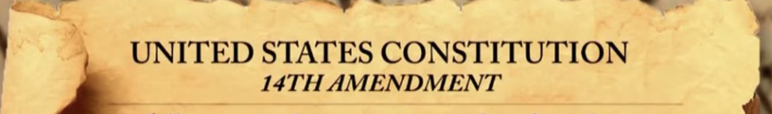

Home
Sources
Quiz
Sources
"Fourteenth Amendment Equal Protection and Other Rights"
Constitution Annotated Analysis and Interpretation of the U.S. Constitution
https://constitution.congress.gov/browse/amendment-14/
"Fourteenth Amendment Ratified on July 28, 1868"
History on the Net
https://www.historyonthenet.com/fourteenth-amendment-ratified
"Landmark Legislation: The Fourteenth Amendment"
United States Senate
https://www.senate.gov/about/origins-foundations/senate-and-constitution/14th-amendment.htm#:~:text=Passed%20by%20the%20Senate%20on,laws%2C%E2%80%9D%20extending%20the%20provisions%20of
Monk, Linda "Due Process Clause, Equal Protection Clause and Disenfranchising Felons"
PBS
https://www.pbs.org/tpt/constitution-usa-peter-sagal/equality/due-process-equal-protection-and-disenfranchisement/#:~:text=The%20Due%20Process%20Clause%20of,process%E2%80%9D%20refers%20to%20fair%20procedures.
>
Strauss, Peter "Due Process"
Cornell Law School
https://www.law.cornell.edu/wex/due_process